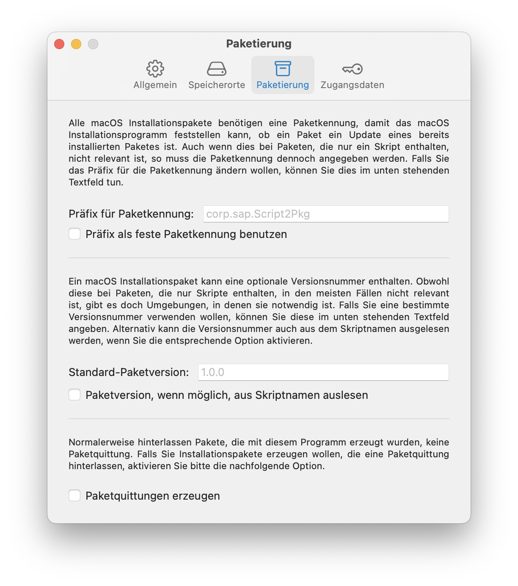
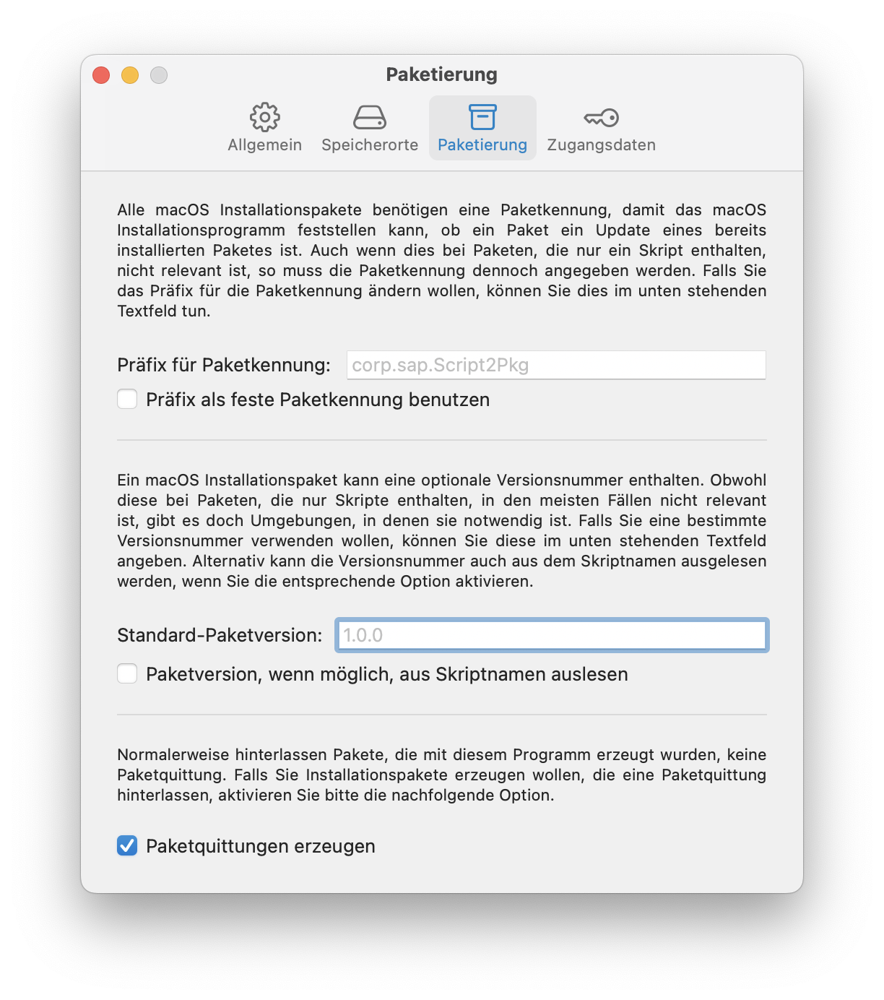

Script2Pkg
Script2Pkg
Script2Pkg
Paketquittungen
Paketquittungen werden von macOS verwendet, um festzustellen, welche Pakete vom Installationsprogramm installiert wurden. Weitere Informationen zu Paketquittungen finden Sie im Glossar .
Normalerweise hinterlässt die Installation jedes Installationspakets eine Paketquittung. Nutzlastfreie Pakete bilden hier allerdings eine Ausnahme, da sie keinerlei Dateien installieren, nicht einmal eine Paketquittung. Somit hinterlassen auch Pakete, die mit Script2Pkg erzeugt wurden, normalerweise keine Paketquittungen. Wenn Sie in Ihrer Umgebung Paketquittungen zwingend benötigen, gehen Sie bitte wie folgt vor, um Script2Pkg für die Erzeugung von Paketquittungen zu konfigurieren:
1. Wählen Sie im Menü Script2Pkg den Menüpunkt Einstellungen …

2. Wählen Sie die Option Paketierung .

3. Aktivieren Sie die Option Paketquittungen erzeugen .

Standardeinstellung wiederherstellen
Um die Standardeinstellung wiederherzustellen, deaktivieren Sie bitte die Option Paketquittungen erzeugen .